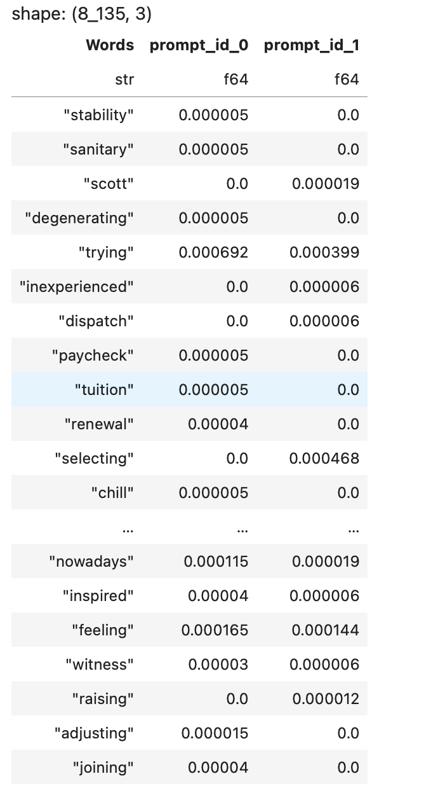

The challenge lies in the near impossibility of discerning between human-generated text and that produced by large language models (LLMs). Considering the potential for widespread misinformation, fake news, phishing, and social engineering, it becomes
imperative to develop methods for accurately identifying LLM-generated text and verifying its content.
This article aims to furnish an overview of current methods for detecting generated text and quantifies their probability of success.I
have built the model from scratch. For a detailed view, please continue to the blog.
Presently, the training dataset includes only three AI (LLM) generated essays. To address this limitation, I have incorporated two additional datasets containing essays generated by GPT-3.5 and GPT-4. I have included this additional dataset from reference [1].
In the preprocessing phase, I first remove stop words. Following that, I employ lemmatization instead of stemming. Lastly, I verify whether the words are present in the English dictionary using WordNet.
Lemmatization is a natural language processing (NLP) technique that involves reducing words to their base or root form, known as the lemma. The goal of lemmatization is to group together different inflected forms of a word so that they can be analyzed
as a single item. This process helps in standardizing and normalizing words, making it easier to analyze and understand the text.
In English, for example, lemmatization would involve reducing words to their base or dictionary form. For
verbs, this often means converting them to their infinitive form, and for nouns, it involves reducing them to their singular form. For instance, the lemma of the word "running" would be "run," and the lemma of "mice" would be "mouse."
Stemming is a natural language processing (NLP) technique that involves reducing words to their root or base form, called the "stem." The goal of stemming is to simplify words to a common base form, even if that form is not a valid word. This process
involves removing prefixes, suffixes, and other affixes from words to obtain the root form.
For example, if you apply stemming to the words "running" and "runner," the common stem would be "run." Similarly, the stem of "cats" and "cat-like"
would be "cat."
Subsequently, I consolidated all the text from student-written essays and LLM (AI) generated essays separately. Then, I counted the frequency of each unique word and stored the results in a dataframe.
Student_essays = Student_essays.group_by('prompt_id').agg(
pl.col('text').str.concat()
)
Student_essays = Student_essays.with_columns(
pl.col('text').map_elements(lambda x: preprocess_text(x))
)
# Extract unique words and count frequencies for each category
Student_unique_words = set()
for text in Student_essays['text']:
Student_unique_words.update(set(text.to_list()))
Student_word_counts = {word: [] for word in Student_unique_words}
for text in Student_essays['text']:
Student_counts = dict(Counter(text.to_list()))
for word in Student_unique_words:
Student_word_counts[word].append(Student_counts.get(word, 0))
Student_num_columns = 2
# Convert the dictionary to a list of tuples
Student_word_tuples = [(word, *values) for word, values in Student_word_counts.items()]
# Create column names dynamically
Student_column_names = ['Words'] + [f'prompt_id_{i}' for i in range(2)]
# Create a Polars DataFrame
Student_essays = pl.DataFrame(Student_word_tuples, schema=Student_column_names)
Student_essays.sort('Words')
Student_essays_prob = Student_essays.with_columns(
[pl.col(f'prompt_id_{i}').truediv(Student_total_words[i]).round(10) for i in range(Student_num_columns)]
)
Same for LLM essays dataset

The Naive Bayes Classifier is a probabilistic machine learning algorithm based on Bayes' theorem. It assumes independence between features, hence "naive." It's commonly used for classification tasks, such as spam filtering, sentiment analysis, and document categorization. The algorithm calculates the probability of a given instance belonging to a particular class and selects the class with the highest probability.
An additional issue to be mindful of is that, since naïve Bayes relies on the product of feature probabilities conditioned on each class, a significant problem arises when new data introduces a feature value that never occurs for one or more levels of a response class. This situation leads to P(xi|Ck) = 0 for the individual feature, causing the zero probability to propagate through the entire multiplication of all features and invariably resulting in a posterior probability of zero for that class.
A solution to this predicament involves implementing the Laplace smoother. The Laplace smoother adds a small number to each of the counts in the frequencies for each feature, ensuring that each feature has a nonzero probability of occurring for each class. Typically, a value of one to two for the Laplace smoother is sufficient, but this constitutes a tuning parameter that should be considered and optimized through cross-validation.
All the zero values are transformed to a non-zero value, ensuring that the entire multiplication term cannot be zero.
def calculate_probability(test_str, prompt_id):
numerator = Decimal(1)
for word in test_str:
filter_df = LLM_essays_prob.filter(LLM_essays_prob['Words'] == word)
if not filter_df.is_empty():
numerator = numerator * Decimal(filter_df[0,prompt_id+1])
numerator = numerator * Decimal(LLM_probability[prompt_id])
denominator = Decimal(1)
for word in test_str:
filter_df = Student_essays_prob.filter(Student_essays_prob['Words'] == word)
if not filter_df.is_empty():
denominator = denominator * Decimal(filter_df[0,prompt_id+1])
denominator = denominator * Decimal(Student_probability[prompt_id])
denominator = numerator + denominator
final_probability = numerator/denominator
# Round to three decimal places using ROUND_HALF_UP rounding method
rounded_final_probability = final_probability.quantize(Decimal('1.0'), rounding=ROUND_HALF_UP)
return float(rounded_final_probability)
In the "generated1" column, my predicted values are stored, while in the "generated" column, the actual answers are stored.
miss_count = 0
for rows in joined_df.rows():
if rows[1] != float(rows[4]):
miss_count += 1
accuracy = ((len(test_df)-miss_count)/len(test_df))*100
I conducted a comparison between my predictions and the actual answers, calculating the instances where a match was not achieved with the actual answers. Among my predictions, only one row was inaccurately predicted. Consequently, I achieved a model accuracy of 99.76%.
[1] Main reference to the additional dataset —
https://www.kaggle.com/datasets/radek1/llm-generated-essays/data
[2] Kaggle Competitions description —
https://www.kaggle.com/competitions/llm-detect-ai-generated-text
[3] Polars Documentation —
https://pola-rs.github.io/polars/py-polars/html/reference/index.html
I have independently developed this model from the ground up. It involves the classification of essays into two labels: LLM-generated or student-written. In addressing this task, I utilized the NLTK library along with modules such as Lemmatization, Stemming, WordNet, and Stopwords to preprocess the dataset, extracting meaningful words. Subsequently, I tokenized the words, counted the frequency of unique words, and stored the results in a DataFrame. Following this, I calculated the probability for each word, incorporating Laplace Smoothing in the Naive Bayes classifier, as discussed earlier. I applied these steps to the development dataset and calculated the accuracy for evaluation.
Lemmatization: During the experimentation phase with varying sizes of flower images, it became evident that the code encounters memory limitations when handling images with dimensions of 512x512 pixels, both on CPU and GPU. To address this issue, it is imperative to leverage TPU (Tensor Processing Unit) for enhanced computational efficiency and the ability to handle larger image sizes without encountering memory constraints. The transition to TPU is recommended as a viable solution to overcome the challenges posed by memory limitations during code execution.
MobileNetV2 model vs VGG16 model: Keras provides a selection of pretrained networks, commonly referred to as 'applications,' which can be readily downloaded and integrated into your project. Among these options, MobileNetV2 stands
out as a model specifically trained for image classification tasks. General view for implementation of MobileNetV2 model is here. In my research, I explored the suitability
of two models, namely MobileNetV2 and VGG16, for the image classification task at hand.
The comparative analysis revealed that the MobileNetV2 model outperforms VGG16 in terms of efficiency. This observation aligns with existing research
findings, further substantiating the superior performance of MobileNetV2. For a more in-depth understanding of the efficacy comparison between these models, I refer to a specific research paper dedicated to this evaluation. The utilization of MobileNetV2 is recommended based on its demonstrated higher efficiency in image classification.
Find my raw Kaggle Notebook here